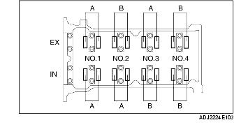

VALVE CLEARANCE INSPECTION [ZJ, Z6]
B3E011012111W01
1. Remove the battery cover.
2. Disconnect the negative battery cable.
3. Remove the under cover and splash shield (RH).
4. Remove the air cleaner component. (European (L.H.D.) specs.) (See INTAKE-AIR SYSTEM REMOVAL/INSTALLATION [ZJ, Z6].)
5. Remove the air cleaner case and position the air cleaner cover out of the way with the PCM connector still connected. (U.K. specs.) (See INTAKE-AIR SYSTEM REMOVAL/INSTALLATION [ZJ, Z6].)
6. Remove the ignition coils. (See IGNITION COIL REMOVAL/INSTALLATION [ZJ, Z6].)
7. Disconnect the ventilation hose.
8. Remove the cylinder head cover.
9. Measure the valve clearance.
-
(1) Rotate the crankshaft clockwise so that the No.1 cylinder is at TDC of the compression stroke.
-
(2) Measure the valve clearance at A shown in the figure.

-
• If not within the specification, replace the tappet and adjust the valve clearance to the median value. (See VALVE CLEARANCE ADJUSTMENT [ZJ, Z6].)
-
Standard valve clearance [Engine cold]
-
0.27-0.33 mm {0.0107-0.0129 in}
-
Note
-
• Make sure to note down the measured values for choosing the suitable replacement tappets.
-
(3) Rotate the crankshaft clockwise 360° so that the No.4 cylinder is at TDC of the compression stroke.
-
(4) Measure the valve clearance at B shown in the figure.

-
• If not within the specification, replace the tappet and adjust the valve clearance to the median value. (See VALVE CLEARANCE ADJUSTMENT [ZJ, Z6].)
-
Standard valve clearance [Engine cold]
-
0.27-0.33 mm {0.0107-0.0129 in}
-
Note
-
• Make sure to note down the measured values for choosing the suitable replacement tappets.
10. Install the cylinder head cover. (See Cylinder Head Cover Installation Note.)
11. Connect the ventilation hose.
12. Install the ignition coils. (See IGNITION COIL REMOVAL/INSTALLATION [ZJ, Z6].)
13. Install the air cleaner component. (See INTAKE-AIR SYSTEM REMOVAL/INSTALLATION [ZJ, Z6].)
14. Install the under cover and splash shield (RH).